数值计算方法
误差
我们需要用误差限$\delta$来确定我们想要的绝对误差程度，用相对误差限$\delta _r=\delta/x^$来确定我们需要的相对误差程度。 如果对有效数字有要求，那么我们用有效数字的定义，让$\delta_r(X^) \leq \frac {1} {2a_1}10^{1-n}$。其中n是有效数字的位数（相对误差和有效数字） 也可以从有效数字的定义出发，让$\delta < 1/210^{k-n}$（绝对误差和有效数字）。
如果是迭代方法。PPT 49页： 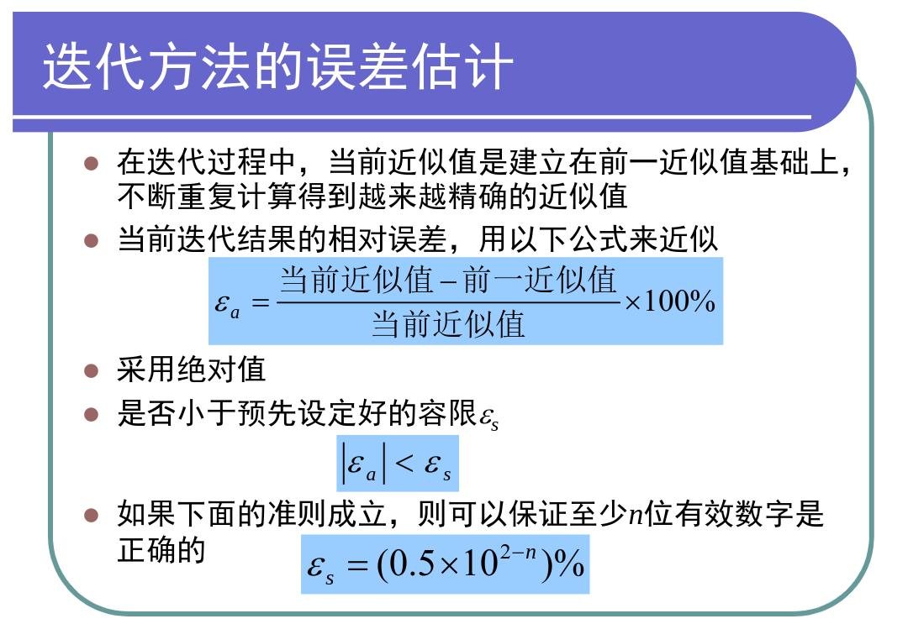
两个几乎相等的浮点数相减，有效位数丢失。 大数+小数，小数被忽略 拖尾效应，正负相互抵消的无穷级数计算，会带来很大的误差。
误差传播的估计——微分
非线性方程求根
图解法虽然精度不高，但是可以提供初值。
- 划界法：利用函数在根附近改变符号的性质。需要两个根的初始猜测位于根的两侧（单根或奇重实根）
- 二分法：每次迭代根的估计值为$x = (x_l+x_r)/2$，真实根落在$(x_r-x_l) /2$的区间内，也就是误差限。
- 试位法：通过一条直线连接$(x_l,f(x_l)),(x_r,f(x_r))$，直线和x轴的交点作为新的根的估计值。
- 开方法：收敛速度较快，但是存在发散的可能性。只需要一个根的初始猜测。
- 不动点法：把$f(x)=0$重组为$x=g(x)$。$|g'(x)|>1$会发散，$|g'(x)|<1$会收敛。
- 牛顿法：把$f(x)$在$x_i$处泰勒展开$f(x_{i+1} = f(x_i)+f'(x_i)(x_{i+1}-x_i)$，用切线代替曲线，求切线和x轴的交点。迭代函数$g(x)=x-\frac{f(x)}{f'(x)}，x_{i+1}=g(x_i)$。收敛速度快，二次收敛（收敛阶概念）。 缺点：需要求导数，对重根收敛速度慢，对初值的选取敏感，要求相当接近真解。
- 割线法：如果函数f(x)比较复杂，求导存在困难。
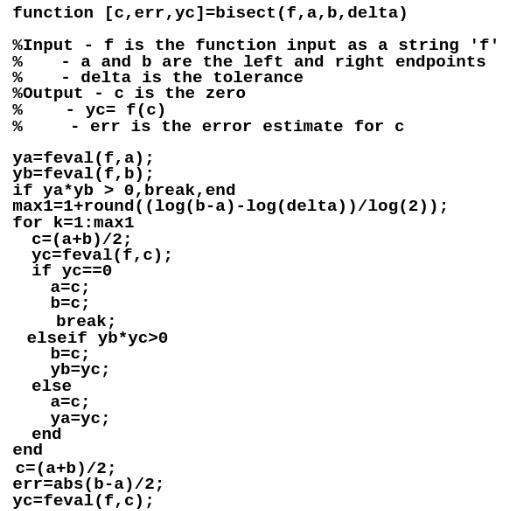
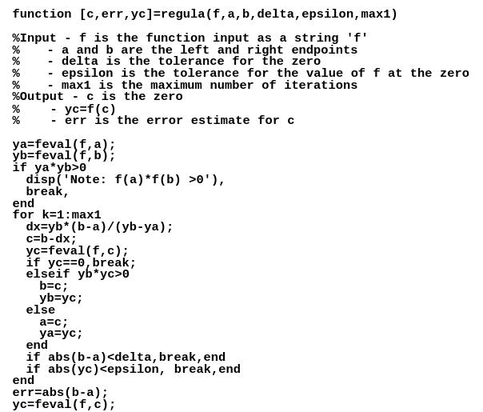
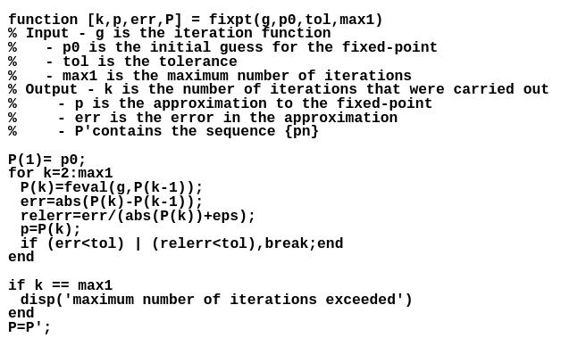
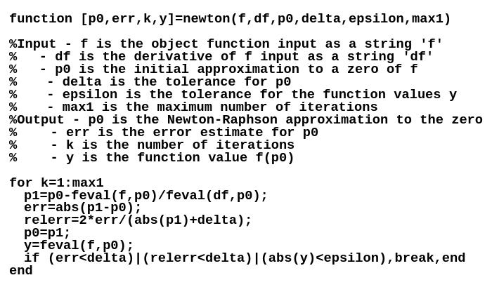
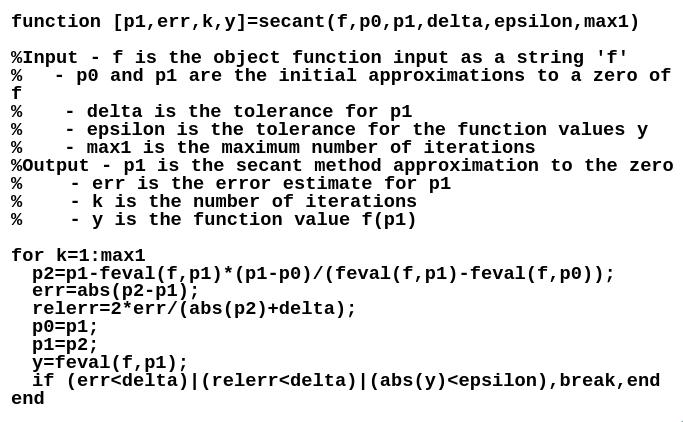
| 函数 | 描述 |
|---|---|
| fzero | 单函数求根 |
| roots | 求多项式的根 |
| poly | 用已知的根构建多项式 |
| polyval | 求多项式的值 |
| polyvalm | 求带有矩阵变量的多项式的值 |
线性代数方程组求解
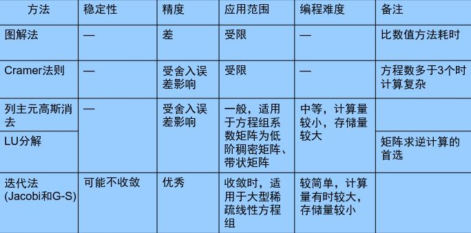 直接法：
- 经过有限步算术运算，可求得方程组的精确解的方法（若在计算过程中没有舍入误差）
- 可预先估算使用机器时间，计算量小，但要占用较多内存，程序复杂。一般说来，适用于方程组的系数矩阵阶数不太高的问题。
- 如高斯消元法、LU分解法、解三对角方程组的追赶法。
迭代法：
- 用某种极限过程去逐步逼近线性方程组精确解的方法
- 迭代法具有占存储单元少，程序设计简单，原始系数矩阵在迭代过程中不变等优点，但计算工作量有时较大，适用于方程组的系数矩阵为稀疏矩阵的问题。
- 存在收敛性及收敛速度等问题，对方程组的系数矩阵有一定的要求，才能保证迭代过程的收敛
- 如雅可比迭代法、高斯-赛德尔迭代法 、超松弛迭代法。
线性代数方程组计算中得到近似计算结果的原因：
(1) 计算机的字长有限，不可避免地产生舍入误差；
(2) 初始数据有问题：由于系数矩阵A和右端项b元素带有某些观测误差，往往不是准确给出，或A, b元素是计算结果，包含舍入误差。
故实际使用矩阵为A+∆A和b+ ∆b。因此，需要分析初始数据A, b的微小误差（扰动）对解x的影响，即扰动方程(A+ ∆A)(x+ ∆x)=b+ ∆b 的解x+ ∆x和x之差。（我们衡量两个矩阵的差距用**范数||A||**之比，2范数最常用）
如果方程组的系数或常数项有微小改变时，解会发生很大的改变，则称这种方程组为“病态”的。
扰动方程的解与原方程的解相对误差不大，称为良态方程。
矩阵的条件数(Cond函数)。A的条件数Cond(A)相对大(>>1)，称Ax=b是病态方程组/坏条件，或A是病态的；当A的条件数Cond(A)相对小，称Ax=b是良态方程组/好条件，或A是良态的。 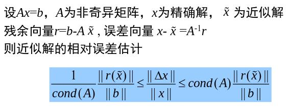 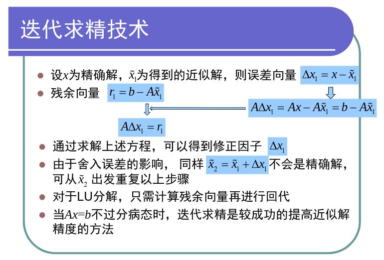
| 函数 | 描述 |
|---|---|
| cond | 计算矩阵条件数 |
| 右除/和左除\ | help slash |
| norm | 计算矩阵或向量的范数 |
| lu | lu分解 |
| inv | 矩阵求逆 |
| chol | cholesky分解 |
| pinv | 求矩阵伪逆 |
| det | 计算行列式的值 |
| rank | 求秩 |
| eig，eigs | 矩阵特征值 |
原始高斯消元法
利用初等变化。高斯消去法的实质是将A分解为两个三角矩阵的乘积。可能会出现除以0或除以一个和0非常接近的数字的情况。而且高斯消元法每一步都依赖于前一步的结果，误差可能会累加。可能的解决办法：
- 对方程组进行缩放使得任何一行中的最大系数等于1，减小舍入误差。
- 选择绝对值最大者作为主元，进行行列交换，执行消元过程
% Gaussian elimination
function X=simple_gauss(A,B)
n=length(A);
for k=1:n-1
for i=k+1:n
factor = A(i,k)/A(k,k);
for j=k+1:n
A(i,j) = A(i,j)-factor*A(k,j);
end
B(i)=B(i)-factor*B(k);
end
end
X(n)=B(n)/A(n,n);
for i=n-1:-1:1
sum = B(i);
for j=i+1:n
sum = sum-A(i,j)*X(j);
end
X(i)=sum/A(i,i);
end
X = X';
end
LU分解（三角分解）
将A分解为两个三角形矩阵L与U的乘积A=LU
AX=B ➡️ LUX=B➡️令Y=UX，求解LY=B然后UX=Y。
那么问题在于如何分解
Doolittle分解：当A的各阶顺序主子式均不为零时，Doolittle分解可以实现并且唯一。
用比较等式两边元素的方法，逐行逐列求解L、U各元素。然后因为LU都是三角矩阵，求解简单。前向代入求解LY=B，后向代入求解UX=Y。
相比于高斯分解，不需要提前知道B的值，求解相同系数方程组效率高。时间复杂度和高斯分解差不多，
三对角方程组的追赶法（Thomas算法）
看PPT。对三对角方程组适用效率高。
function X=Thomas(A,B)
m = length(A);
beta = zeros(1,m);
y = zeros(1,m);
X = zeros(1,m);
beta(1) = A(1,2)/A(1,1);
y(1)=B(1)/A(1,1);
for i = 2:m-1
beta(i) = A(i,i+1)/(A(i,i)-A(i,i-1) *beta(i-1));
y(i) = (B(i)-A(i,i-1)*y(i-1))/(A(i,i)-A(i,i-1)*beta(i-1));
end
i = m;
y(i) = (B(i)-A(i,i-1)*y(i-1))/(A(i,i)-A(i,i-1)*beta(i-1));
X(m) = y(m);
for i = m-1:-1:1
X(i) = y(i)-beta(i)*X(i+1);
end
X = X';
end
对称正定矩阵方程组的Cholesky分解
看PPT。对对称正定方程组适用效率高。
----- | | polyfit | 根据数据用多项式进行最小二乘拟合 | | interp1 | 一维插值（查表） | | interp1q | 快速一维线性插值 | | interp2 | 二维插值 | | interpn | n维插值 | | spline | 三次样条插值 | | ppval | 分段多项式估计函数 | |lsqcurvefit|非线性最小二乘法|
数值积分和微分
数值微分：数值微分的解往往不太稳定，精度较差。
- 有限差商逼近导数
- 使用插值方法构造光滑曲线，对插值曲线微分
数值积分：通常数值积分的过程是稳定的，所得的解精确度较高。
- Newton-Cotes 积分
- 龙贝格（Romberg）积分
- 高斯（Gauss）求积公式
有限差商近似
$f'(x_0) = \frac{f(x_0)-f(x_0-h)}{h} = \frac{f(x_0+h)-f(x_0)}{h} = \frac{f(x_0+h/2)-f(x_0-h/2)}{h}$，分别是向前、向后、中心差商。还可以通过泰勒展开式子增加级数来增加精度。
$h$越小，误差越小，但同时舍入误差增大。我们用事后估计法来确定最佳的$h$
插值型数值微分/数值积分
用插值函数的导数近似为原函数的导数。用三次样条插值的导数近似被插值函数的导数，效果相当好。
同样的也可以用插值得到的多项式的积分。n次插值至少有n阶代数精度。
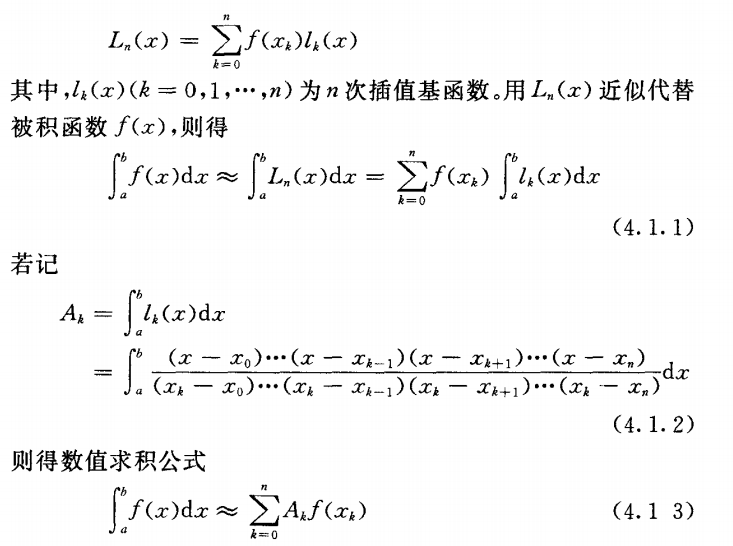
Newton-Cotes积分
插值积分需要插值点，我们让插值点等分就是Newton-Cotes积分。
$\int_{a}^{b} f(x) dx = (b-a)\sum_{k=0}^{n}C_k^{(n)}f(x_k)$，其中$C_k^{(n)}$称为柯特斯系数。其实$A_k=(b-a)C_k^{(n)}$，就是上面那个插值数值积分的一种形式。只不过上面的$A_k$十分复杂，而这里的$C_k^{(n)}$因为插值点等分，4.1.2式子的更简单的形式。
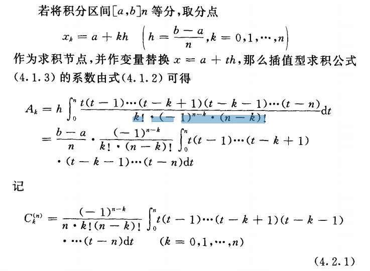
可以看出C和函数f和积分区间[a,b]都没有关系，只和等分数n有关系。所以我们有：
- n=1，梯形公式
- n=2，Simpson1/3
- n=3，Simpson3/8
- n=4，Cotes公式
- 因为和插值公式类似的原因，不推荐阶数较高的公式。
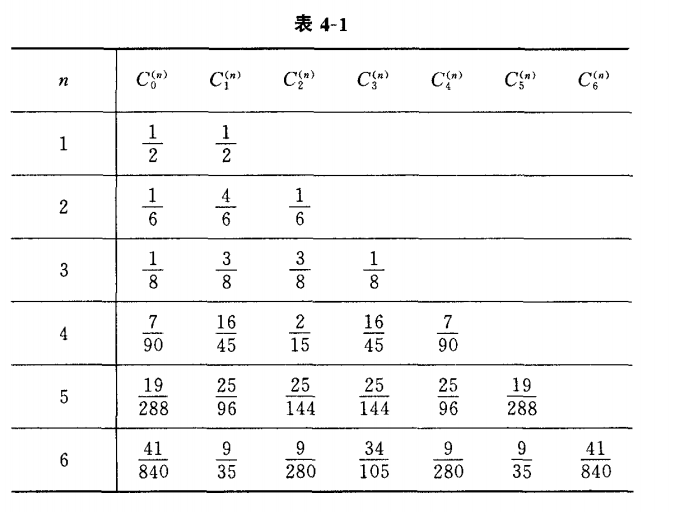
容易看出，当积分区间[a,b]较大时，直接使用牛顿-柯特斯公式所得积分近似值的精度是很难得到保证的。因此 ，在实际应用中，为了既能提高结果的精度，又使算法简便且易在电子计算机上实现，往往采用复合求积的方法。 所谓复合求积 ，就是先将积分区间分成几个小区间，并在每个小区间上用低阶牛顿 一 柯特斯公式计算积分 的近似值 ，然后对这些近似值求和 ，从而得到所求积分的近似值 。由此得到的一些具有更大实用价值的数值求积公式 ，统称为复合求积公式。
龙贝格（Romberg）积分
更快速的收敛。
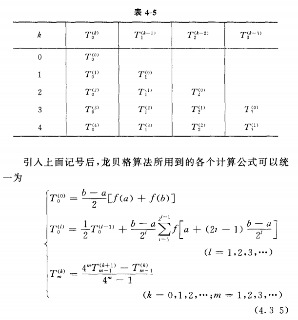
T就是你要的积分。
高斯（Gauss）求积公式
常微分方程
含有未知函数及其导数的方程——微分方程(Differential Equations)
被微分的量(v)称为应变量(Dependent Variable)，与v的微分有关的量t称为自变量(Independent Variable)。如果函数只含有一个自变量，方程称为常微分方程(ODE, OrdinaryDifferential Equation)。如果函数含有两个或更多自变量，称为偏微分方程(PDE, Partial Differential Equation)。
定解条件：给出积分曲线在初始点的状态(初始条件)，相应的定解问题称为初值问题；给出积分曲线首尾两端的状态(边界条件)，称为边值问题。
我们的数值解法，求得不是函数，是一系列离散点的值。数值解法求问题的解y(x)在一系列点$a=x0<x1<x2<...<xn=b$上值$y(xi)$的近似值$yi( i=0,1,2,...,n)$。相邻的两个节点之间的距离$hi=xi+1-xi$称为由$xi$到$xi+1$的步长，通常取成常量$h$，称为等步长，此时$xi=x0+ih(i=1,2, ...,n)$或$xi+1=xi+hi(i=0,1,2, ...,n-1)$。
- 初值问题的数值解法
- 欧拉（Euler）法
- 龙格-库塔（Runge-Kutta）法
- 微分方程组和高阶微分方程
- 多步法
- 边值问题
- 打靶法
- 差分法
欧拉（Euler）法
新值=旧值+斜率×步长。简单但是精度不高。
向前差商：由泰勒公式可以得到$\frac {y(x_{i+1}-x_i)}{h}=y'(x_i)+h/2y''(\Epsilon)$，然后通过移项得到$y(x_{i+1}=y(x_i)+hf(x_i,y(x_i))+h^2/2y''(\Epsilon)$。然后把最后一项舍去当作误差。可以发现误差是会累积的。